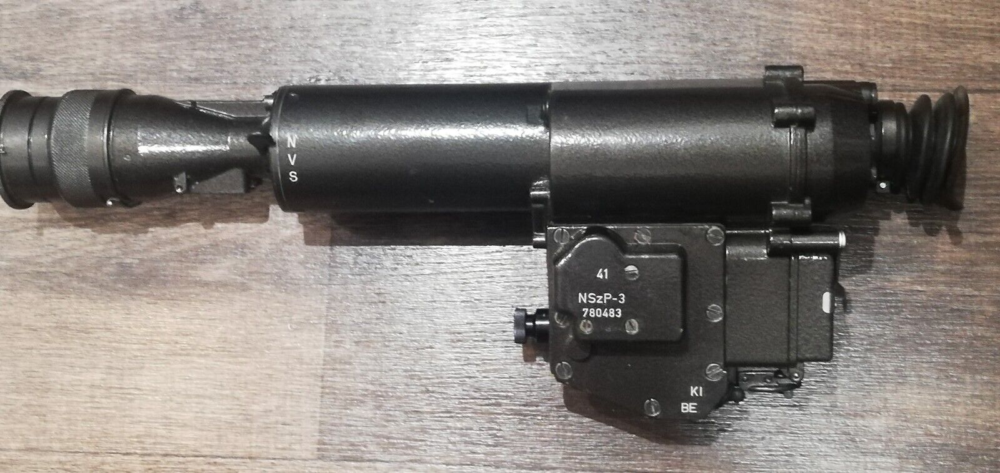

NSZP3


This is a 1st generation, cascade tube rifle scope designed to fit the optics rail found on most Soviet weapons. There is no automatic brightness control or protection features.
Many of these scopes, including this one, were "demilitarised" to become legal to own in Germany. The reticle projection unit and mounting lever were removed.
This device comes from a time before modern dry cell batteries, the originals are compeltely obsolete. It's possible to modify them to use a 3x AAA battery holder instead.
You may notice some markings "N,V,S" on the unit, flipping the lever next to them switches between several internal filters which reduce the brightness of the image.